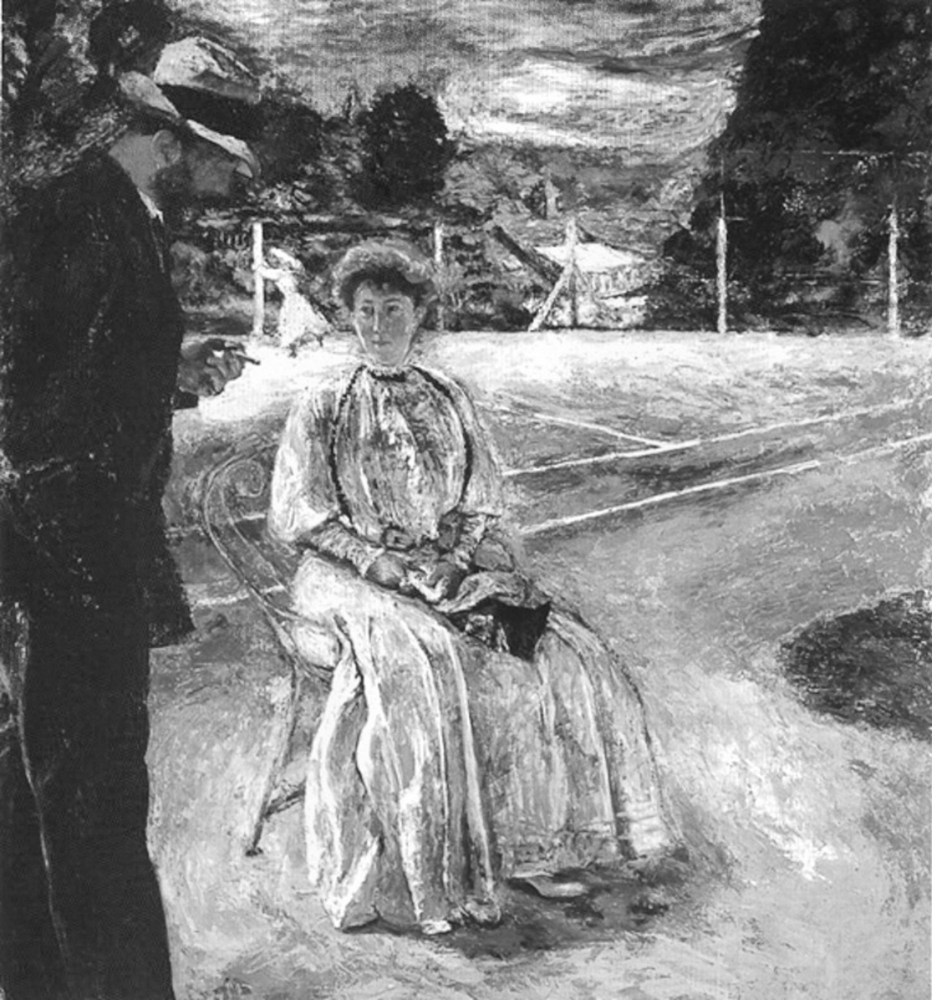
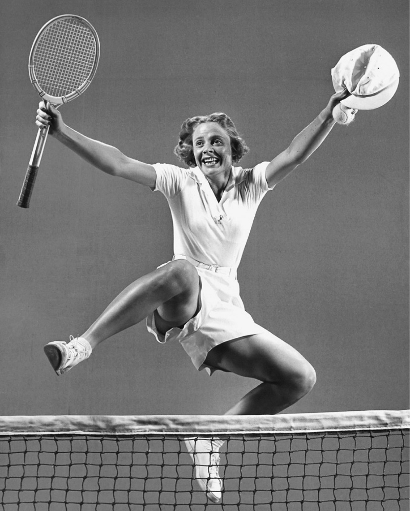
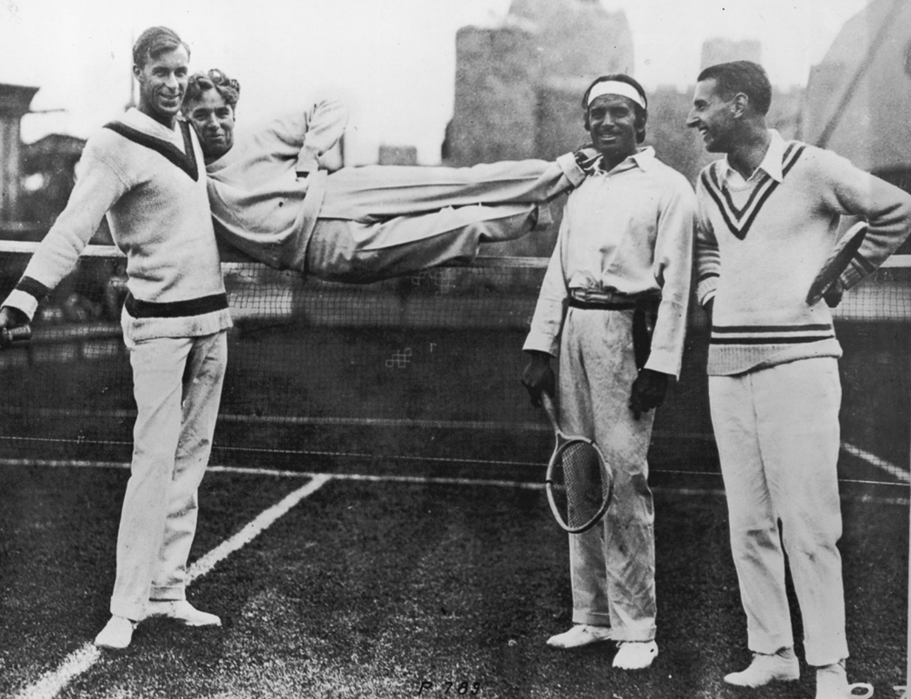
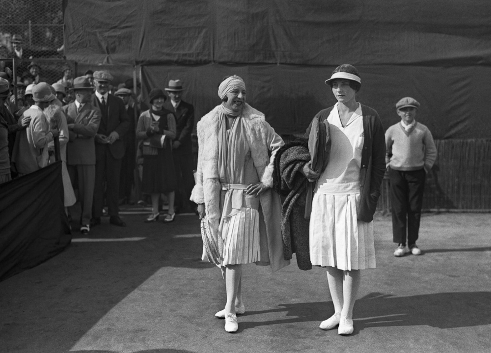
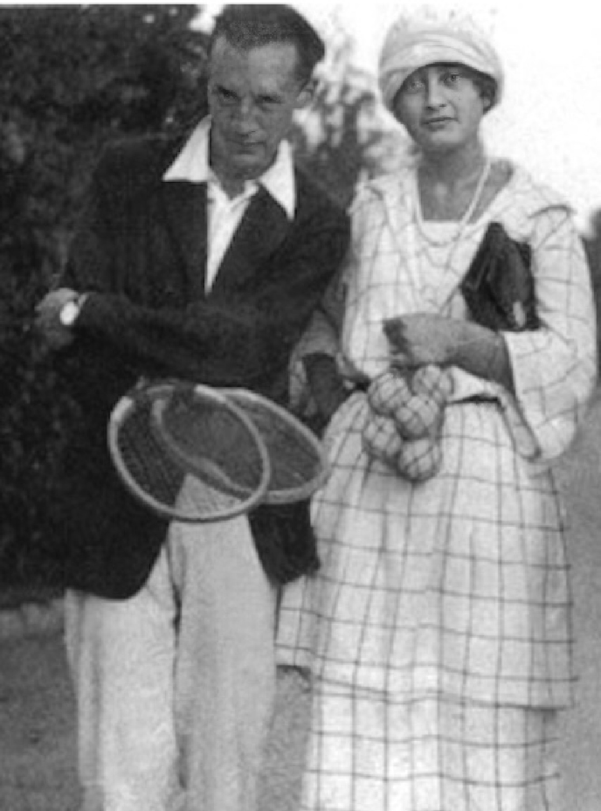
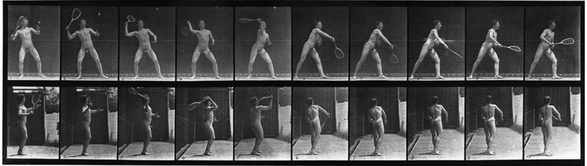
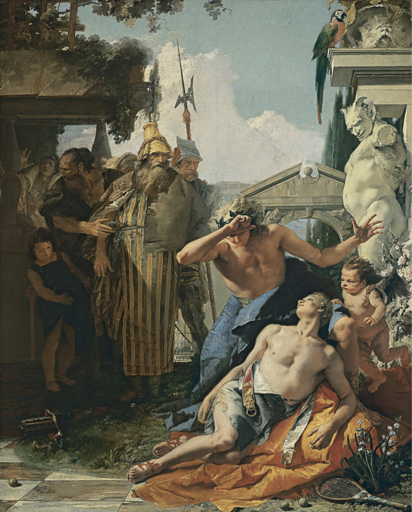
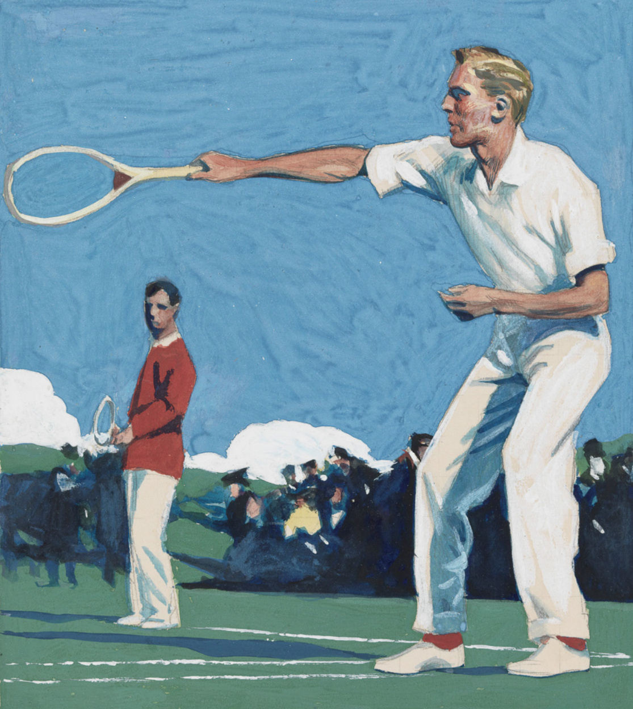

Phần I: Sức Hút Ma Thuật Charisma & Quần Vợt Trong Hội Họa Hậu Ấn Tượng Pháp
Khám phá từ trường nhân cách của các nhà vô địch, sân quần vợt trong tranh Pierre Bonnard - Édouard Vuillard và vụ án ly kỳ của Claude Anet
1. Mở Đầu & Khái Niệm "Charisma" Trong Quần Vợt
Nicholas Fox Weber — nhà sử học văn hóa lừng danh thế giới, người viết tiểu sử cho Le Corbusier, Balthus và các nghệ sĩ trường phái Bauhaus — mở đầu cuốn sách bằng một định nghĩa đầy thi vị: Sân quần vợt không đơn thuần là một bề mặt chữ nhật kẻ vôi trắng; đó là một sân khấu kịch nghệ và một đấu trường La Mã nơi vẻ đẹp hình thể, trí tuệ chiến thuật và tính cách con người được phơi bày trần trụi.
Điều gì khiến hàng triệu khán giả bị mê hoặc bởi một trận đấu đỉnh cao?
Weber cho rằng đó là "Charisma" — một sức hút ma thuật vô hình toát ra từ thần thái, nhân cách và từng cử chỉ của vận động viên.
Charisma không chỉ là việc đánh bóng chuẩn xác hay giành nhiều cúp vô địch.
Nhiều tay vợt có kỹ thuật cơ sinh học hoàn hảo nhưng lối chơi của họ lại khô khan như một cỗ máy lập trình sẵn, không để lại bất kỳ rung động cảm xúc nào trong lòng người xem.
Ngược lại, những huyền thoại như Bill Tilden, Pancho Gonzales, Rod Laver, Bjorn Borg, John McEnroe, và sau này là Roger Federer hay Rafael Nadal, luôn mang trên mình một nguồn điện trường quyến rũ mãnh liệt.
Khi Federer lướt trên mặt cỏ hay Nadal gầm lên sau một cú cứu bóng không tưởng, chuyển động của họ trở thành tác phẩm nghệ thuật sống động lay động sâu sắc tâm can người hâm mộ.
2. Chương 2: Quần Vợt Trong Hội Họa Của Pierre Bonnard & Édouard Vuillard
Vào cuối thế kỷ mười chín, môn quần vợt sân cỏ (Lawn Tennis) vừa du nhập từ nước Anh sang Pháp đã lập tức trở thành biểu tượng của lối sống thượng lưu tao nhã, sự tự do thân thể và niềm vui sống ngoài trời (Joie de Vivre).
Hai danh họa kiệt xuất của trường phái Hậu Ấn tượng và nhóm Les Nabis — Pierre Bonnard và Édouard Vuillard — là những nghệ sĩ thị giác đầu tiên bị mê hoặc bởi vẻ đẹp hình học của môn thể thao quý tộc này.
Trong các bức họa nổi tiếng của mình, Vuillard không tập trung vào sự căng thẳng cơ bắp của cuộc tranh tài thể lực.
Thay vào đó, ông khắc họa những sân quần vợt đồng quê xanh mướt được bao bọc bởi hàng cây râm mát vùng Normandy, nơi các quý cô trong trang phục váy trắng trang nhã ngồi trò chuyện thảnh thơi bên lề sân.
Pierre Bonnard lại sử dụng những mảng màu vàng ấm áp, ánh sáng mặt trời lấp lánh phản chiếu trên mặt sân cát đỏ và đường kẻ vôi trắng tinh khôi để thể hiện sự hòa hợp tuyệt mỹ giữa thiên nhiên và hoạt động thể chất của con người.
Cây vợt gỗ và quả bóng nỉ trong tranh của Bonnard và Vuillard trở thành những họa tiết thị giác tinh tế, đánh dấu bước chuyển mình của xã hội châu Âu sang kỷ nguyên hiện đại nơi thể thao và nghệ thuật giao thoa làm một.
3. Chương 3: Vụ Án Ly Kỳ Của Claude Anet (Jean Schopfer)
Một trong những câu chuyện hấp dẫn nhất được Weber phục dựng trong cuốn sách là cuộc đời kỳ lạ của Jean Schopfer — người thường được lịch sử biết đến dưới bút danh văn học Claude Anet.
Năm 1892, chàng sinh viên Jean Schopfer xuất sắc giành chức vô địch tại Giải Quần vợt Vô địch Nước Pháp đầu tiên trong lịch sử (tiền thân của giải Roland Garros ngày nay).
Tuy nhiên, thay vì theo đuổi sự nghiệp vận động viên đơn thuần, Schopfer lại là một học giả uyên bác, một nhà phê bình nghệ thuật tiên phong và một tiểu thuyết gia nổi tiếng.
Schopfer kết bạn sâu sắc với Édouard Vuillard và chính ông là người đã đặt hàng danh họa này thiết kế một bộ đồ ăn bằng gốm sứ độc nhất vô nhị khắc họa các hoạt cảnh thi đấu quần vợt.
Dưới bút danh Claude Anet, ông đã viết nên những bài tiểu luận đầu tiên trong văn học Pháp phân tích mỹ học của cú giao bóng và sự thanh lịch của các đường bóng qua lại.
Cuộc đời của Schopfer minh chứng cho một chân lý: Quần vợt từ thuở sơ khai đã là môn thể thao của những tâm hồn trí thức và nghệ sĩ lớn.

Hình 1: Tác phẩm hội họa của Pierre Bonnard — Ánh sáng mặt trời lấp lánh và vẻ đẹp thanh tao của môn quần vợt sân cỏ trong thời kỳ hoàng kim của nghệ thuật Pháp.

Hình 2: Tác phẩm của Édouard Vuillard — Không gian sân quần vợt miền quê thanh bình trong ánh sáng bảng lảng của trường phái Hậu ấn tượng Pháp.
Phần II: Alice Marble — Ngọn Đuốc Bình Quyền & Bạo Chúa Nghệ Thuật Big Bill Tilden
Người phụ nữ đầu tiên mặc quần soóc trên sân đấu, bức thư lịch sử giải phóng Althea Gibson và cú giao bóng sấm sét Cannonball của Bill Tilden
4. Chương 4: Alice Marble — Nữ Chiến Binh Giải Phóng & Trận Cầu Với Charlie Chaplin
Trong lịch sử quần vợt nữ thế giới, Alice Marble là một hiện tượng phi thường đi trước thời đại hàng nửa thế kỷ.
Với mười tám danh hiệu Grand Slam danh giá ở các nội dung đơn và đôi, bà đã cách mạng hóa lối chơi của nữ giới bằng phong cách giao bóng lên lưới (Serve-and-Volley) đầy dũng mãnh và tốc độ — một lối chơi mà thời bấy giờ ngay cả đa số tay vợt nam cũng chưa dám áp dụng.
Bà cũng là nữ vận động viên đầu tiên dám rũ bỏ chiếc váy dài vướng víu để mặc chiếc quần soóc (shorts) trắng khỏe khoắn bước ra thánh địa Wimbledon, tạo nên một cơn địa chấn giải phóng cơ thể phụ nữ trong xã hội phương Tây.
Weber kể lại một giai thoại thú vị về mối quan hệ thân thiết giữa Alice Marble và các nhân vật huyền thoại của điện ảnh Hollywood tại lâu đài San Simeon của trùm báo chí William Randolph Hearst.
Trong một trận đấu đôi biểu diễn, Alice Marble đánh cặp cùng Hearst để đối đầu với danh hài Charlie Chaplin.
Chaplin liên tục ăn gian điểm số bằng cách hô bóng ngoài sân dù bóng rơi rõ ràng trong vạch vôi.
Quá phẫn nộ trước sự thiếu trung thực của vua hề, Marble đã tung ra một cú đập bóng (Smash) sấm sét bay sạt qua mang tai Chaplin khiến ông sợ hãi ngã nhào xuống sân, tạo nên một trận cười nghiêng ngả cho toàn bộ khán giả thượng lưu.
Tuy nhiên, cống hiến vĩ đại nhất của Alice Marble không nằm ở những danh hiệu hay giai thoại giải trí.
Vào tháng Bảy năm 1950, bà đã dũng cảm viết một bài xã luận chấn động trên tạp chí American Lawn Tennis, kịch liệt lên án sự hèn nhát và đạo đức giả của Hiệp hội Quần vợt Mỹ (USLTA) khi cấm cửa tay vợt da màu Althea Gibson tham gia thi đấu vì lý do sắc tộc.
Bức tâm thư đầy đanh thép của Marble đã phá tan bức tường định kiến chủng tộc, mở đường cho Gibson trở thành người Mỹ gốc Phi đầu tiên thi đấu và vô địch US Open và Wimbledon, làm thay đổi vĩnh viễn diện mạo của thể thao thế giới.

Hình 3: Alice Marble và vua hề Charlie Chaplin trong trận đánh đôi giao hữu tại Hollywood — Biểu tượng của sự giao hòa giữa thể thao đỉnh cao và nghệ thuật điện ảnh.
5. Chương 5: "Big Bill" Tilden — Nghệ Sĩ Kiêm Bạo Chúa Của Kỷ Nguyên Vàng
Nếu có một nhân vật nào thể hiện trọn vẹn sự kiêu hãnh và bi kịch của nghệ thuật quần vợt thì đó chính là William Tatem Tilden II — người thường được thế giới tôn xưng là "Big Bill" Tilden.
Thống trị làng quần vợt suốt thập niên 1920 với mười danh hiệu Grand Slam đơn và chuỗi bảy năm liên tiếp bất bại tại cúp Davis, Tilden không xem quần vợt là một môn thể thao đơn thuần; ông xem nó như một vở bi kịch kịch tính của Shakespeare.
Vũ khí hủy diệt mang thương hiệu của Tilden là cú giao bóng "Đạn Đại Bác" (Cannonball Serve) đạt vận tốc lên tới hơn một trăm sáu mươi kilômét một giờ — một kỳ tích cơ sinh học phi thường khi sử dụng cây vợt gỗ nặng nề và sợi dây đan ruột bò thô sơ.
Trên sân đấu, Tilden hành xử như một vị hoàng đế kiêu hãnh và bạo chúa.
Ông thường cố tình để đối thủ dẫn trước trong ván đầu tiên để kích thích sự kịch tính của khán giả, rồi sau đó mới tung ra toàn bộ kho vũ khí kỹ thuật ma thuật của mình để lật ngược tình thế và nghiền nát đối phương trong sự ngỡ ngàng tột độ.
Tuy nhiên, phía sau ánh hào quang rực rỡ ấy là một tâm hồn nghệ sĩ cô độc, đầy mâu thuẫn nội tâm và cái kết bi thảm bị xã hội ruồng bỏ vào những năm tháng cuối đời.
Tilden để lại cho hậu thế một di sản bất tử: Quần vợt đỉnh cao là nơi ý chí của một cá nhân có thể vươn tới tầm vóc của nghệ thuật sân khấu vĩ đại.

Hình 4: "Big Bill" Tilden — Biểu tượng kiêu hãnh của Kỷ nguyên Vàng, người kết hợp hoàn hảo giữa cú giao bóng sấm sét Cannonball và tư duy kịch nghệ Shakespeare trên sân đấu.

Hình 5: Bộ tứ huyền thoại trên sân tập thập niên 1920: Bill Tilden cùng Charlie Chaplin, Manuel Alonso và tài tử Douglas Fairbanks Sr. giao lưu trên sân quần vợt.
Phần III: Nữ Thần Suzanne Lenglen & René Lacoste — Cuộc Cách Mạng Thời Trang Sân Cỏ
Vũ điệu ba-lê của La Divine, sự ra đời của dải băng đô Lenglen do Jean Patou thiết kế và đế chế áo polo cá sấu của René Lacoste
6. Chương 7 & 13: Suzanne Lenglen ("La Divine") & Cuộc Cách Mạng Thời Trang Của Jean Patou
Vào thập niên 1920, Suzanne Lenglen không chỉ là một nhà vô địch quần vợt; bà là một siêu sao văn hóa toàn cầu đầu tiên của thể thao thế giới, được báo chí nước Pháp tôn vinh với danh xưng "La Divine" (Nữ Thần).
Lối chơi của Lenglen thanh thoát và duyên dáng như một vũ công của đoàn múa ba-lê Ballets Russes.
Bà di chuyển trên không trung như thể trọng lực không hề tồn tại, nhún nhảy tung người bắt vô-lê với sự chính xác tuyệt đối.
Lenglen mang phong thái ngạo nghễ và tự do của một nghệ sĩ tự do: bà thường nhấp từng ngụm rượu Cognac trong các giờ nghỉ đổi sân để xoa dịu hệ thần kinh căng thẳng.
Tuy nhiên, dấu ấn bất hủ nhất của Suzanne Lenglen đối với nền văn minh nhân loại chính là cuộc cách mạng thời trang mà bà khởi xướng cùng nhà thiết kế thời trang cao cấp (Haute Couture) lừng danh Jean Patou.
Trước năm 1919, các tay vợt nữ buộc phải mặc những bộ váy dài chấm gót chân nặng nề, áo nịt ngực (corset) bó chặt đến khó thở và đội mũ rộng vành che kín khuôn mặt.
Tại giải Wimbledon năm 1919, Lenglen gây rúng động toàn bộ xã hội thượng lưu Anh quốc khi bước ra sân trong trang phục do Jean Patou may riêng: bà rũ bỏ hoàn toàn áo nịt ngực, mặc chiếc áo cộc tay khoe đôi cánh tay trần rám nắng khỏe khoắn, và diện chiếc váy xếp ly bằng lụa trắng chỉ dài ngang gối.
Mái tóc đen ngắn của bà được quấn gọn gàng bởi một dải khăn lụa màu sắc rực rỡ, nhanh chóng được cả thế giới biết đến với tên gọi "Băng Đô Lenglen" (The Lenglen Bandeau).
Sự xuất hiện của Suzanne Lenglen trên sân quần vợt đã giải phóng cơ thể phụ nữ khỏi xiềng xích của thời Victoria cổ hủ, mở ra kỷ nguyên của sự tự do thân thể và phong cách thể thao hiện đại (Sportswear Chic).
7. Chương 6: René Lacoste — Bộ Não Cá Sấu & Chiếc Áo Polo Vượt Thời Gian
Cùng thời với Suzanne Lenglen, một biểu tượng vĩ đại khác của quần vợt Pháp là René Lacoste — một trong "Bốn Chàng Ngự Lâm" (The Four Musketeers) đã xuất sắc đánh bại đội tuyển Mỹ hùng mạnh để đem chiếc cúp Davis danh giá về cho nước Pháp vào năm 1927.
Khác với tài năng bẩm sinh rực rỡ của các đồng đội, Lacoste tự nhận mình không có thể lực phi thường hay những cú đánh trời ban.
Sức mạnh của ông bắt nguồn từ sự kỷ luật thép và bộ não phân tích chiến thuật khoa học đến mức hoàn hảo.
Lacoste là người đầu tiên trong lịch sử quần vợt mang theo một cuốn sổ tay da nhỏ ra sân, ghi chép tỉ mỉ từng thói quen, điểm mạnh và điểm yếu tâm lý của từng đối thủ mà ông chuẩn bị chạm trán.
Biệt danh huyền thoại "Cá Sấu" (The Crocodile) của Lacoste ra đời từ một vụ cá cược một chiếc vali bằng da cá sấu với đội trưởng đội tuyển Davis Cup của Pháp, phản ánh chính xác lối chơi kiên nhẫn bám đuổi con mồi không bao giờ buông tha của ông trên sân đấu.
Vào năm 1933, cảm thấy ngột ngạt trong những chiếc áo sơ mi dài tay bằng vải dệt thoi truyền thống, Lacoste đã tự tay thiết kế một mẫu áo thi đấu hoàn toàn mới: chiếc áo thun dệt kim tổ ong pique ngắn tay, thoáng mát và co giãn tự nhiên, với hình một chú cá sấu màu xanh lá cây thêu tinh tế trên ngực trái.
Đó chính là sự ra đời của chiếc áo thun Polo kinh điển — một sáng tạo bắt nguồn từ nhu cầu thể thao thực tiễn nhưng đã vươn lên trở thành một trong những biểu tượng thời trang toàn cầu có sức sống bền bỉ nhất trong lịch sử thế giới.

Hình 6: Suzanne Lenglen ("La Divine") — Nữ thần quần vợt Pháp với chiếc váy xếp ly lửng ngang gối và dải băng đô Jean Patou mở ra kỷ nguyên thời trang thể thao hiện đại.

Hình 7: "Trận chiến thế kỷ" năm 1926 tại Cannes — Cuộc chạm trán lịch sử giữa nữ thần phóng khoáng Suzanne Lenglen và "Tiểu thư Poker" Helen Wills Moody.

Hình 8: René Lacoste — Thủ lĩnh Bốn Chàng Ngự Lâm Pháp, biểu tượng của sự kiên nhẫn Cá Sấu và người cha đẻ của chiếc áo polo thể thao kinh điển.
Phần IV: Văn Hào Nabokov, Vụ Án Mạng Của Caravaggio & Phép Màu Bất Diệt Của Sân Quần Vợt
Huấn luyện viên quần vợt Vladimir Nabokov tại Berlin, bi kịch sân đấu của danh họa Caravaggio và chiều sâu văn hóa bất tận
8. Chương 12: Vladimir Nabokov — Văn Hào Lưu Vong Kiêm Thầy Dạy Quần Vợt
Ít ai biết rằng Vladimir Nabokov — một trong những nhà văn vĩ đại nhất của văn học thế kỷ hai mươi, tác giả của các kiệt tác Lolita, Pnin và Pale Fire — là một tay vợt cuồng nhiệt và có kỹ thuật điêu luyện.
Trong những năm tháng sống lưu vong đầy khó khăn và túng thiếu tại Berlin vào thập niên 1920 và 1930, trước khi nổi tiếng toàn cầu, Nabokov đã kiếm sống nuôi gia đình bằng nghề làm huấn luyện viên dạy quần vợt trên các sân đất nện nước Đức.
Weber chỉ ra rằng: tính chất đối xứng hình học, nhịp điệu luân chuyển nhịp nhàng giữa hai nửa sân và yêu cầu chính xác tuyệt đối đến từng milimet của đường vạch vôi quần vợt đã thấm sâu vào tư duy văn chương của Nabokov.
Các tác phẩm của ông được xây dựng như những trận đấu quần vợt đa tầng: nơi người viết và người đọc liên tục tung ra những cú giao bóng ngôn từ, những pha bẫy tâm lý cài cắm khéo léo và những cú đánh dọc dây đầy bất ngờ.
Đối với Nabokov, một cú chạm vợt thanh thoát đưa quả bóng rơi trúng mép vạch vôi mang vẻ đẹp thi ca thuần khiết không thua kém bất kỳ câu thơ tuyệt mỹ nào của Pushkin.

Hình 9: Văn hào Vladimir Nabokov trên sân quần vợt — Tác giả "Lolita" tìm thấy cảm hứng nghệ thuật và cấu trúc nhịp điệu từ chuyển động vung vợt đầy tao nhã.
9. Chương 15: Eadweard Muybridge & Cuộc Cách Mạng Nhiếp Ảnh Chuyển Động
Vào cuối thế kỷ mười chín, nhiếp ảnh gia tiên phong Eadweard Muybridge đã làm thay đổi vĩnh viễn sự hiểu biết của con người về chuyển động thể thao thông qua công trình chụp ảnh liên hoàn tốc độ cao (Chronophotography).
Muybridge bố trí một dãy máy ảnh liên tiếp được kích hoạt tự động bằng dây ngắt điện khi vận động viên di chuyển qua.
Lần đầu tiên trong lịch sử nhân loại, mắt thường có thể phân rã từng phần nghìn giây của cú vung vợt quần vợt: sự xoay chuyển của khung xương chậu, độ nén đàn hồi của các khối cơ bắp và sự chuyển giao trọng tâm từ chân sau sang chân trước.
Công trình của Muybridge không chỉ truyền cảm hứng mãnh liệt cho các họa sĩ trường phái Vị Lai (Futurism) và Lập Thể (Cubism), mà còn đặt nền móng khoa học sơ khai cho toàn bộ hệ thống camera tốc độ cao và công nghệ phân tích cơ sinh học video kỹ thuật số ngày nay.

Hình 10: Nghiên cứu chuyển động của Eadweard Muybridge (Animal Locomotion) — Những thước ảnh quang học đầu tiên mổ xẻ chuỗi động học của cú giao bóng tennis.
10. Chương 22 & 24: Vụ Án Mạng Của Caravaggio Đến Những Quả Bóng Của Vua Henry V
Sự giao thoa giữa quần vợt và lịch sử nhân loại đôi khi mang những sắc thái bi kịch và khốc liệt đến bất ngờ.
Nicholas Fox Weber dẫn dắt người đọc trở về thành Rome vào năm 1606, nơi danh họa bậc thầy của trường phái Baroque — Michelangelo Merisi da Caravaggio — vướng vào một biến cố định mệnh làm thay đổi toàn bộ cuộc đời ông.
Một cuộc ẩu đả đẫm máu đã bùng nổ giữa Caravaggio và đối thủ Ranuccio Tomassoni ngay tại sân quần vợt cổ (Jeu de Paume / Real Tennis).
Tranh cãi nảy lửa xuất phát từ một vụ cá cược điểm số trong trận đấu đã dẫn đến một cuộc đấu kiếm sinh tử, khiến Tomassoni thiệt mạng còn Caravaggio bị kết án tử hình vắng mặt, buộc ông phải sống những năm tháng cuối đời trong sự lưu đày và trốn chạy trong bóng tối hoảng loạn.
Ngược dòng thời gian xa hơn, trong vở kịch lịch sử Henry V của William Shakespeare, môn thể thao này trở thành biểu tượng của quyền lực chính trị và chiến tranh.
Khi Thái tử nước Pháp gửi tặng vị vua trẻ tuổi Henry V của nước Anh một thùng gỗ chứa đầy những quả bóng tennis như một lời giễu cợt ngạo mạn rằng chàng chỉ hợp với những trò chơi bóng bẩy của trẻ con, Henry V đã đưa ra lời đáp trả đanh thép: ông sẽ biến những quả bóng tennis đó thành những quả đạn pháo công phá ngai vàng nước Pháp trong trận chiến Agincourt huyền thoại.

Hình 11: Kiệt tác "Cái chết của Hyacinth" (1752) của Giambattista Tiepolo — Cây vợt và quả bóng trong thần thoại Hy Lạp cổ đại, một biểu tượng kinh điển của nghệ thuật quần vợt.
11. Lời Kết: Phép Màu Bất Tử Của Quần Vợt
Khép lại cuốn sách, Nicholas Fox Weber khẳng định: Quần vợt là một trong những thành tựu văn hóa tinh tế nhất mà nền văn minh nhân loại từng sáng tạo ra.
Nó vừa là một bài toán hình học Euclid chuẩn mực, vừa là một sân khấu bi hài kịch của nhân tính, vừa là nguồn cảm hứng bất tận cho hội họa, văn học và thời trang.
Mỗi khi bước chân lên sân đấu, người chơi không chỉ đang theo đuổi một quả bóng màu vàng nỉ; họ đang bước vào một di sản văn hóa phong phú đã được bồi đắp qua hàng thế kỷ bởi những tâm hồn nghệ sĩ, những nhà tư tưởng lớn và những chiến binh kiên cường nhất trong lịch sử.

Hình 12: Bức họa quần vợt của danh họa Edward Hopper — Sự tĩnh lặng, hình học ánh sáng và chiều sâu tâm tưởng trên sân đấu qua lăng kính hội họa hiện đại.